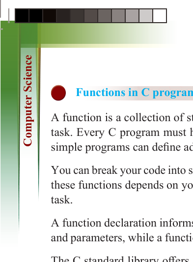
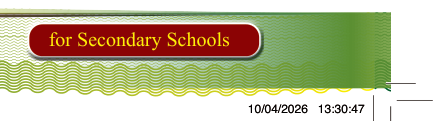
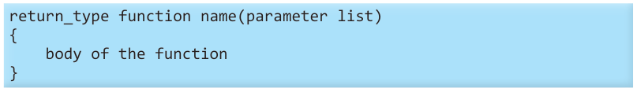

192
for Secondary Schools
Functions in C programming
A function is a collection of statements that work together to accomplish a specific task. Every C program must have at least one function, which is main(), but even simple programs can define additional functions.
You can break your code into separate functions, and how you divide the code among
these functions depends on your design. Typically, each function handles a distinct task.
A function declaration informs the compiler about the function’s name, return type, and parameters, while a function definition includes the actual body of the function.
The C standard library offers a variety of built-in functions that your program can
call, such as strcat() to concatenate two strings, memcpy() to copy memory from one
location to another, and many others. Functions are also sometimes called methods, sub-routines, or procedures.
Defining a function

The general structure of a function definition in C programming is as follows:



return_type function name(parameter list)


{


body of the function


}

A function definition in C consists of a function header and a function body. The

following are the key components of a function:

(i) Return type: A function may return a value. The return type specifies the


data type of the value returned by the function. If the function does not return

a value, the return type is void.

(ii) Function name: This is the name of the function. Together with the parameter


list, it forms the function signature.
(iii) Parameters: Parameters act as placeholders. When a function is called, values are passed to the parameters, known as actual parameters or arguments. The parameter list specifies the function’s type, order, and number of parameters.
Parameters are optional, thus, a function can have none.
(iv) Function body: The body of the function contains the statements that define what the function does.

ComputerScin